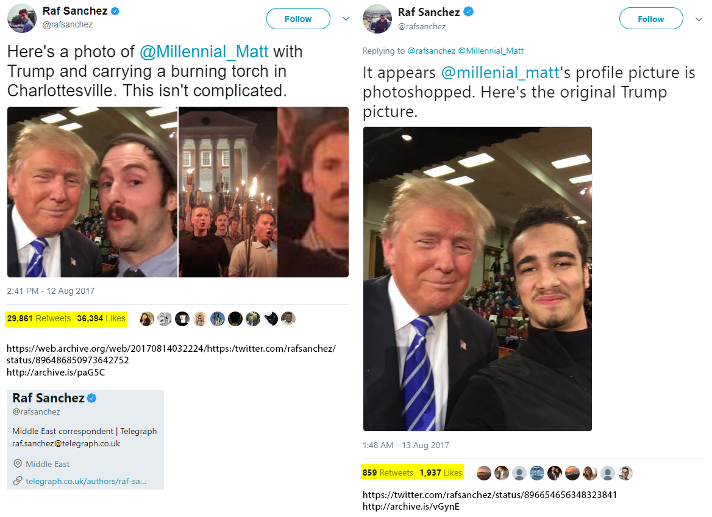
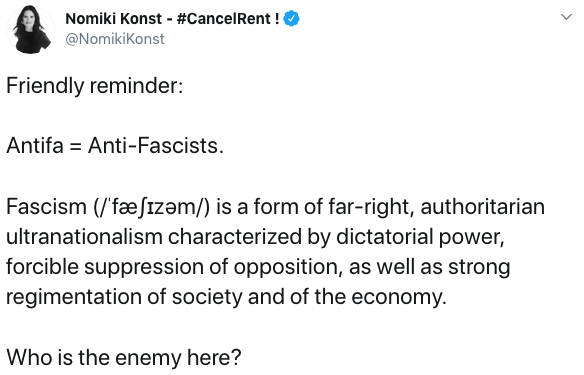
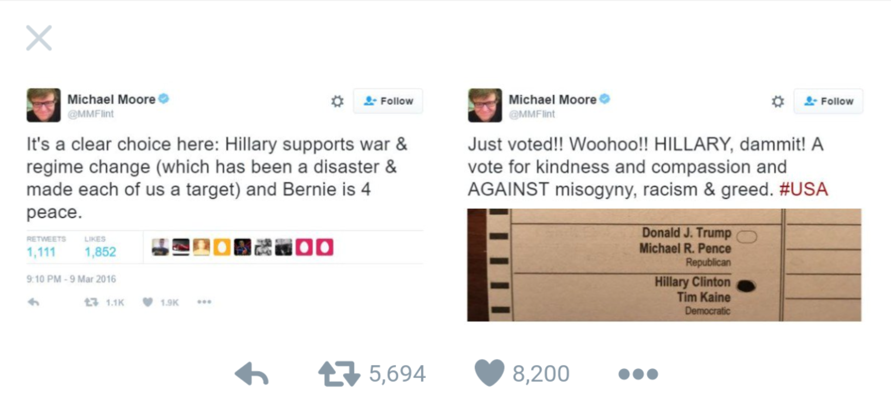
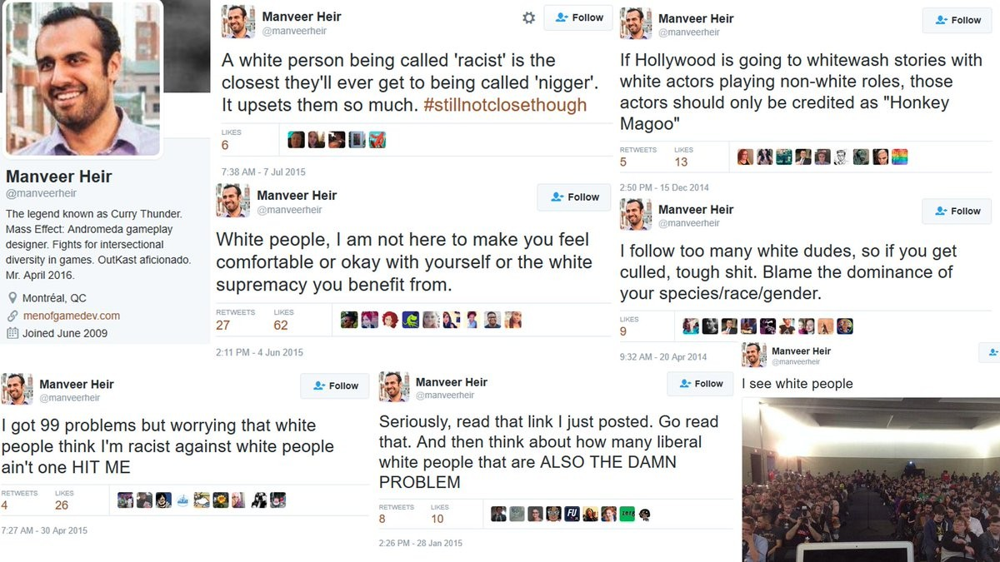

1 / 10

2 / 10

3 / 10
4 / 10

5 / 10
6 / 10

7 / 10

8 / 10

9 / 10
10 / 10
The media has become your enemy. These monsters will do anything to get viewership. They lie, cheat and bully the citizens of the United States simply for the almighty dollar. Media Hates You was created to document the medias hypocrisy. This includes social media.
Use the buttons on the side of the images to scroll through.